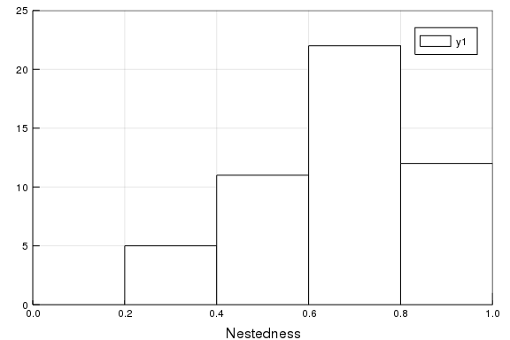

Integration with EcologicalNetworks.jl
The Mangal package is integrated with EcologicalNetworks for analysis.
using Mangal
using EcologicalNetworksA simple example
In this simple example, we will look at a food web from 1956, retrieve it from the Mangal database, then convert it into a usable object:
db_version = network("johnston_1956_19560101_947");
db_version.description"Predation by short-eared owls on a salicornia salt marsh"The conversion to the network is done using the convert method, which by default will return a UnipartiteNetwork, where species are the MangalNode of the original network:
N = convert(UnipartiteNetwork, db_version)19×19 unipartite ecological network (Bool, MangalNode) (L: 58)We can check that the type of the network is correct:
eltype(N)(Bool, MangalNode)We can also confirm that all interactions and node counts match:
count(MangalInteraction, db_version) == links(N)truecount(MangalNode, db_version) == richness(N)trueA more complex example
In this
hp_dataset = dataset("hadfield_2014");
hp_networks = networks(hp_dataset);The next step might take a minute or two, but will consist in downloading every information related to the network, and converting it into one UnipartiteNetwork for every network in the dataset.
N = [convert(UnipartiteNetwork, n) for n in hp_networks];Note that the previous step could use queries too, so it would be possible to restrict the interactions to, e.g. a certain type, for networks with multiple interaction types.
B = [convert(BipartiteNetwork, n) for n in N];using Plots
histogram(η.(B), frame=:box, c=:white)
xaxis!("Nestedness", (0,1))
yaxis!("", (0, 25))
Building custom networks
Converting to a network is always a wrapper around converting an array of interactions. Let's imagine that we are interested in representing the network of species that either consume, or are consumed by, salmonids. The first step will be to retrieve the MangalReferenceTaxon that correspond to these species:
salmonids = backbones("q" => "Salmo")5-element Array{MangalReferenceTaxon,1}:
MangalReferenceTaxon(4173, "Salmo trutta", 47318, 161997, 8032, 10237843,
missing, 2019-02-22T22:40:06, 2019-02-22T22:40:06)
MangalReferenceTaxon(4261, "Salmo gairdneri", missing, 161991, 857570, mis
sing, missing, 2019-02-22T22:40:12, 2019-02-22T22:40:12)
MangalReferenceTaxon(4286, "Salmoninae", 71162, 623286, 504568, missing, m
issing, 2019-02-23T03:04:02, 2019-02-23T03:04:02)
MangalReferenceTaxon(5300, "Salmonidae", 1340, 161931, 8015, 11144860, mis
sing, 2019-02-27T04:10:07, 2019-02-27T04:10:07)
MangalReferenceTaxon(7015, "Salmo salar", 30453, 161996, 8030, 11144931, m
issing, 2019-03-19T19:16:54, 2019-03-19T19:16:54)For every MangalReferenceTaxon, we need to retrieve its number of MangalNode – let's see how many there are, using the shorthand count method for this:
count.(MangalNode, salmonids)5-element Array{Int64,1}:
12
1
1
5
1Since none of these are very high, we can retrieve the nodes directly:
salmonids_nodes = vcat(nodes.(salmonids)...);At this point, we may want to count the number of interactions for all of the nodes, but let us (for the sake of simplicity) trust that there are fewer than 500 in all cases:
all_int = [Mangal.interactions(salmo, "count" => 500) for salmo in salmonids_nodes];
salmonids_interactions = vcat(all_int...);At this point, we end up with a Vector{MangalInteraction}, i.e. an array of interactions.
An interesting consequence of this approach is that we now can look at all the datasets that are part of this query, and e.g. retrieve their DOI:
salmonids_datasets = unique([i.network.dataset for i in salmonids_interactions])
[d.reference.doi for d in salmonids_datasets]9-element Array{Union{Missing, String},1}:
missing
"10.1126/science.257.5073.1107"
"10.2307/1604"
missing
"10.1080/00288330.2004.9517265"
"10.1016/j.ecolmodel.2010.10.024"
missing
"10.1016/j.pocean.2012.02.002"
"10.2307/1599"Finally, the array of interactions can be converted into a UnipartiteNetwork:
salmonid_network = convert(UnipartiteNetwork, salmonids_interactions)408×408 unipartite ecological network (Bool, MangalNode) (L: 406)Get the taxa
salmonid_resolved_network = taxonize(salmonid_network)59×59 unipartite ecological network (Bool, MangalReferenceTaxon) (L: 57)show interactions
for i in salmonid_resolved_network
println("$(i.from.name) -> $(i.to.name)")
endSalmo gairdneri -> Salvelinus fontinalis
Salmo gairdneri -> Semotilus atromaculatus
Salmo gairdneri -> Catostomus commersoni
Salmo gairdneri -> Rhinichthys atratulus
Salmo trutta -> Diporeia
Salmo trutta -> Benthos
Salmo trutta -> Mysis
Salmonidae -> Osmeridae
Salmo trutta -> Alosa pseudoharengus
Salmo trutta -> Cottoidea
Salvelinus fontinalis -> Salmo gairdneri
Salmo gairdneri -> Salmo gairdneri
Salmo gairdneri -> Semotilus corporalis
Salmo gairdneri -> Notropis cornutus
Salmoninae -> Mugilidae
Salmonidae -> Salmonidae
Oncorhynchus kisutch -> Salmonidae
Sebastes -> Salmonidae
Cephalopoda -> Salmonidae
Oncorhynchus tshawytscha -> Salmonidae
Selachimorpha -> Salmonidae
Trachurus symmetricus -> Salmonidae
Squalus -> Salmonidae
Phycidae -> Salmonidae
Anoplopoma fimbria -> Salmonidae
Flatfish -> Salmonidae
Ardenna grisea -> Salmonidae
Uria aalge -> Salmonidae
Laridae -> Salmonidae
Alcidae -> Salmonidae
Aves -> Salmonidae
Phocidae -> Salmonidae
Procellariiformes -> Salmonidae
Mysticeti -> Salmonidae
Odontoceti -> Salmonidae
Hexagrammidae -> Salmonidae
Metacarcinus magister -> Salmonidae
Salmonidae -> Copepods
Salmonidae -> Amphipoda
Salmonidae -> Medusozoa
Salmonidae -> Pacifica
Salmonidae -> Spinifera
Salmonidae -> Clupeidae
Salmonidae -> Engraulidae
Salmonidae -> Mysida
Salmonidae -> Isopoda
Salmo salar -> Baetis
Salmo salar -> Chironomidae
Salmo salar -> Leuctra
Salmo salar -> Diatoms
Salmo salar -> Desmidiales
Salmo salar -> Algae
Salmo salar -> Ephemeroptera
Salmo salar -> Chimarra marginata
Salmo salar -> Protozoa
Salmo salar -> Micronecta poweri
Salmo salar -> Collembola